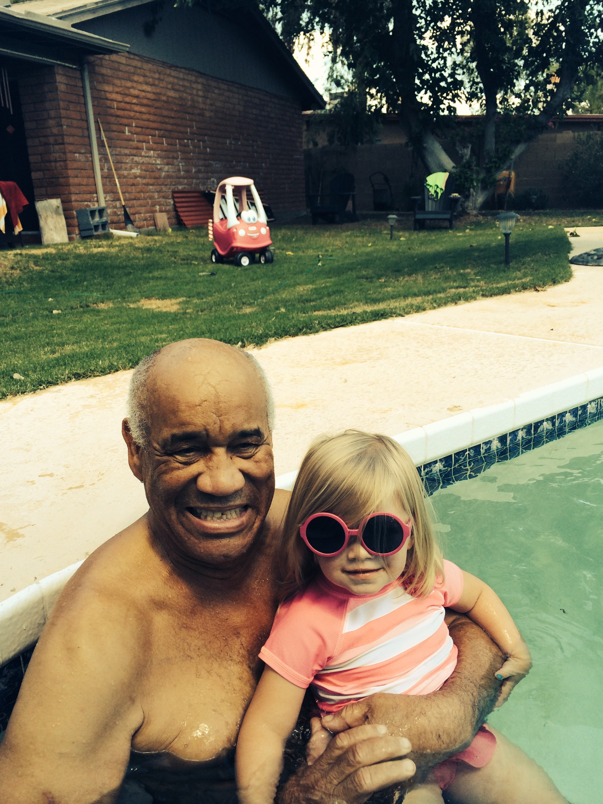

<h2>Remembering Johnny</h2>

<div id="maximage">
    <div class="first-item">
        
        <div class="in-slide-content">
            <p>Hello-Johnny</p>
        </div>
    </div>
    
    
    

<!--     <div class="video">
        
        <iframe width="100%" height="100%" src="http://www.youtube.com/embed/KVwSP51KVO8?wmode=opaque" frameborder="0" class="youtube-video" allowfullscreen></iframe>
    </div>

    
    
    
    
 -->
</div>


<script type="text/javascript" charset="utf-8">
$(function(){
    $('#maximage').maximage({
        cycleOptions: {
            fx:'scrollHorz',
            speed: 800,
            timeout: 8000,
            prev: '#arrow_left',
            next: '#arrow_right'
        },
        onFirstImageLoaded: function(){
            jQuery('#cycle-loader').hide();
            jQuery('#maximage').fadeIn('fast');
        }
    });
});
</script>
